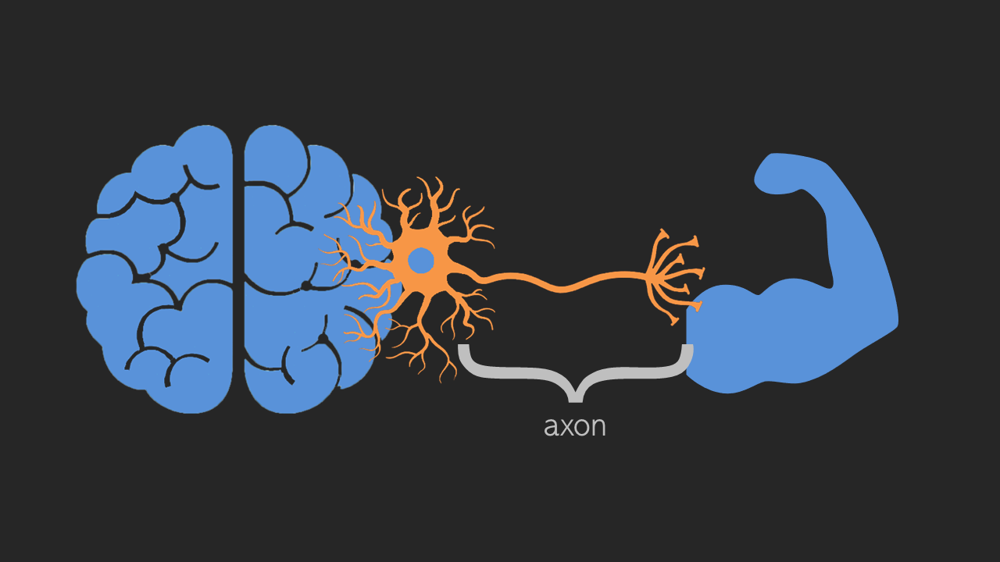
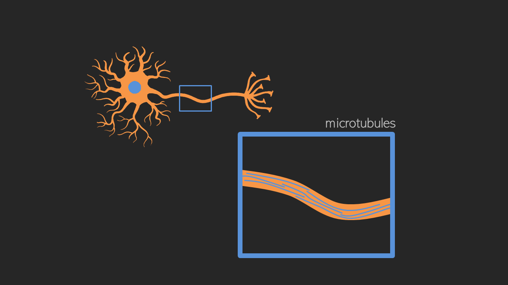
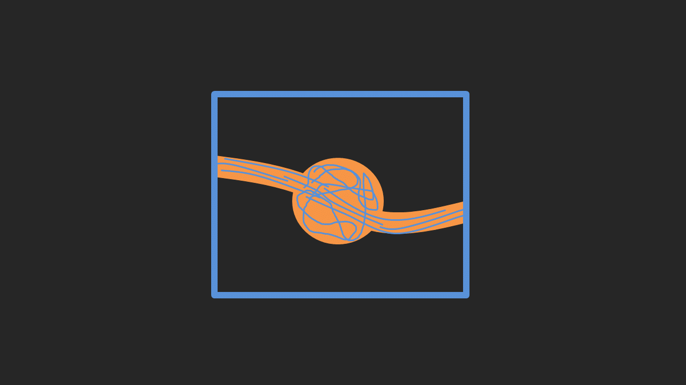
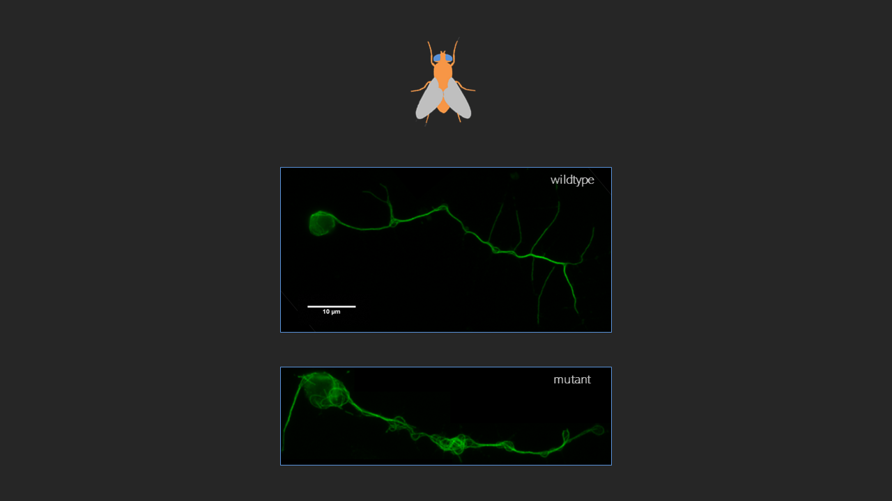
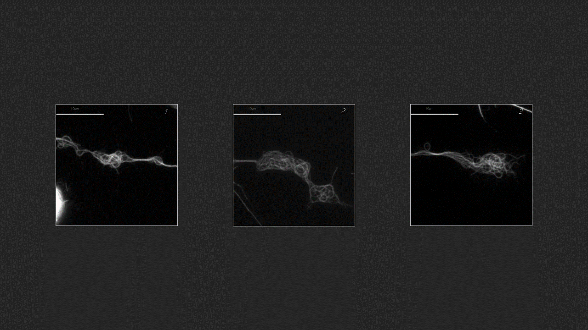

I've always been interested in the study of the brain, and particularly its diseases and ageing. It's no surprise that I went to do my project at the Prokop lab, where we use Drosophila to study the fundamental questions of how axons, the long, slender processes of brain cells (neurons) survive for a lifetime, being prone to injury and several diseases.

A particularly interesting characteristic of these cells it that their structure is maintained, and that's with the help of their cytoskeleton, particularly microtubules. Now, under normal conditions, microtubules appear to be like bundles of dry spaghetti connected by proteins.

However, in some diseases and sometimes in normal ageing, axons have swellings and when we look inside, the microtubules look like bowls of cooked spaghetti, and we don't know why.

We noticed that this happens with mutations to proteins in completely different pathways, so it raises the question: are these conformations of microtubules similar between diseases?


This is where I came in, and developed ALFRED, to help the objective and quantitative analysis of the images of these phenotypes.
All the Drosophila images were acquired by Dr. André Voelzmann.